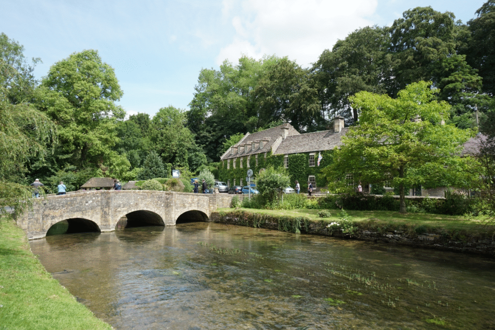
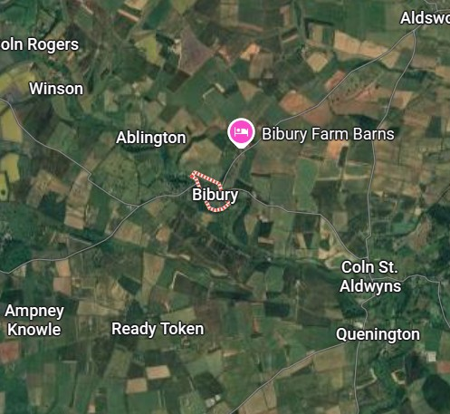

Minha Viagem
Bibury é um dos vilarejos mais encantadores da Inglaterra, localizado naregião de Cotswolds. Suas tradicionais casas de pedra, ruas tranquilas e o rio Coln formam uma paisagem que parece saída de um conto de fadas. É o destino ideal para quem deseja conhecer a história, a arquitetura e a tranquilidade do interior inglês.
⬆ Voltar ao topo

Nos Encontre
Nossa missão é aproximar você dos destinos mais fascinantes do mundo. Organizamos roteiros pensados para quem busca experiências autênticas, permitindo explorar lugares como Bibury com conforto, segurança e muito conhecimento sobre sua história e cultura.
⬆ Voltar ao topo

Dicas
Para aproveitar melhor sua visita, prefira caminhar pelas ruas do vilarejo durante a manhã ou no fim da tarde, quando o movimento é menor. Use roupas confortáveis, leve uma câmera para registrar as paisagens e reserve um tempo para apreciar a culinária local e conhecer as pequenas lojas da região.
⬆ Voltar ao topo